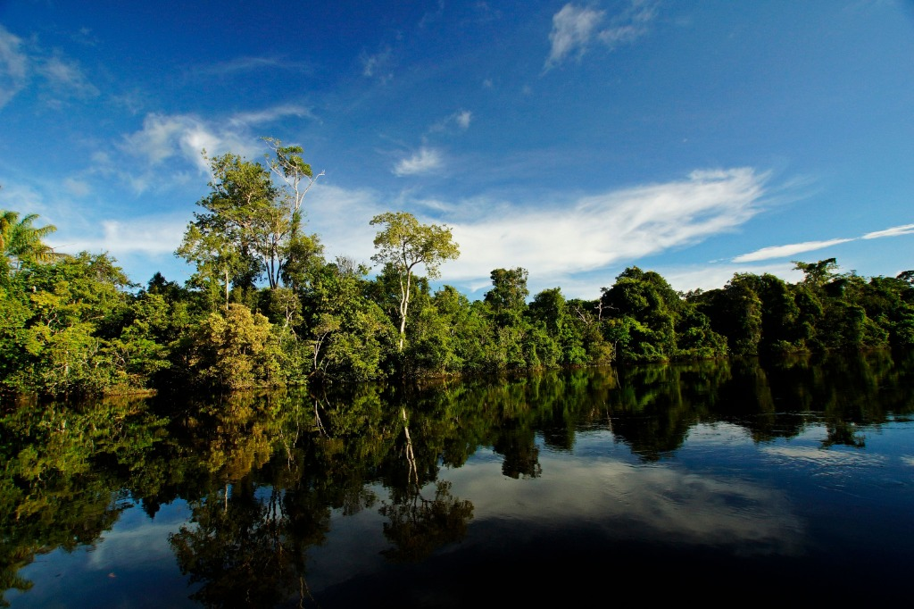
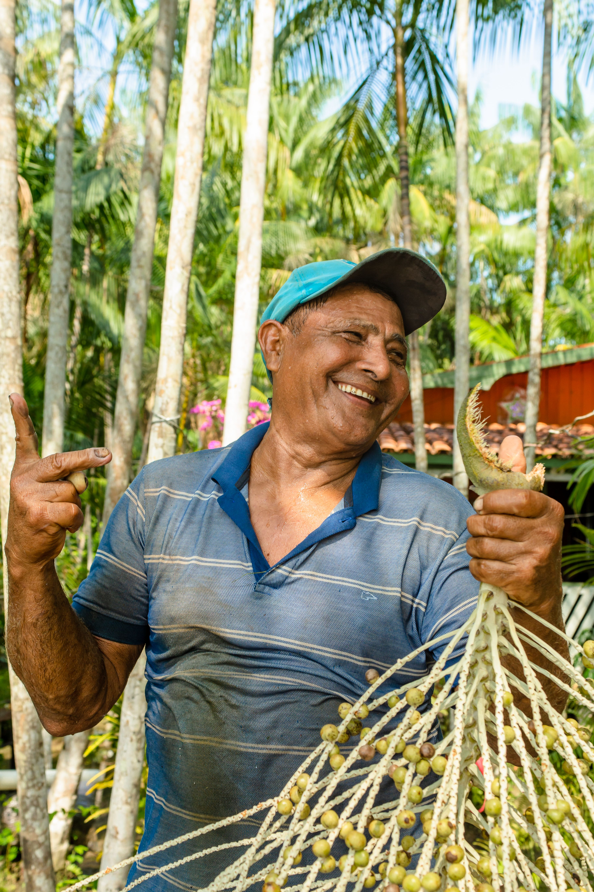
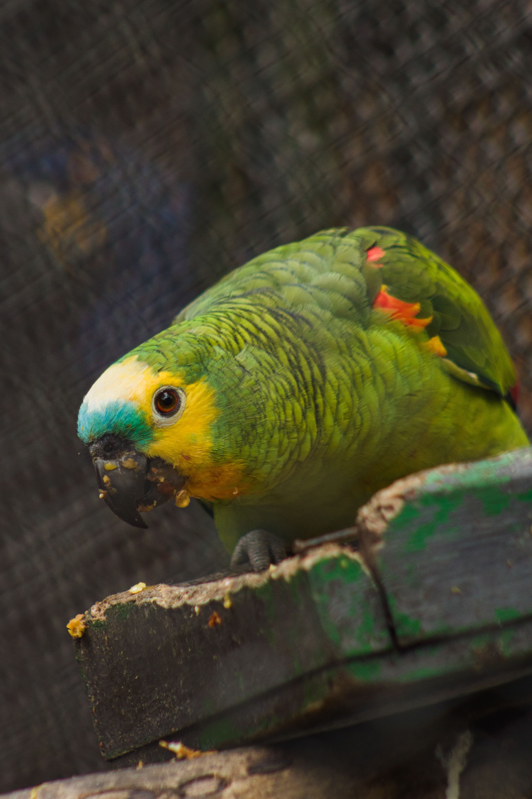
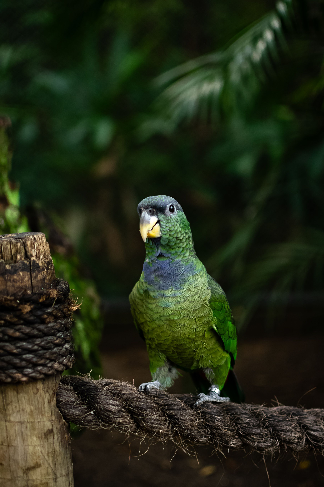

Vem aí o 1º Fórum da Aliança Jurídica pela Amazônia (AJA)!
Nos dias 21 e 22 de outubro de 2026, em Belém (PA), a AJA reunirá sua rede para fortalecer uma inteligência jurídica coletiva e avançar na construção de uma agenda para a Amazônia.

Belém • PA"Um espaço imersivo de diálogo e construção coletiva, voltado ao debate de propostas de incidência jurídica."
"Vem aí o 1º Fórum da Aliança Jurídica pela Amazônia (AJA)! Nos dias 21 e 22 de outubro de 2026, no Parque de Bioeconomia e Inovação da Amazônia, em Belém (PA), a AJA reunirá sua rede para um espaço de diálogo, troca e construção coletiva."
A AJA é uma rede estratégica de articulação e cooperação que reúne advogados, pesquisadores, organizações da sociedade civil, coletivos de base e profissionais que atuam na e pela Amazônia. O Fórum nasce desse propósito: aproximar diferentes saberes e experiências para fortalecer uma inteligência jurídica coletiva e avançar na construção de uma agenda jurídica para a Amazônia.
Pensado como um espaço imersivo, propositivo e participativo, o 1º Fórum contará com dois dias de mesas-redondas e dinâmicas de construção coletiva, voltadas ao debate de propostas de incidência jurídica e à construção de instrumentos práticos de ação.
Autonomia Amazônida
Protagonismo das vozes locais na liderança dos processos de decisão jurídica e ambiental.
Democracia Ambiental
Acesso público à informação, participação em licenciamentos e transparência regulatória.
Litigância Estratégica
Intervenções de alto impacto em tribunais superiores (STF, STJ) e corte interamericana.
Salvaguardas PIQCTs
Garantia integral da Consulta Livre, Prévia e Informada da Convenção 169 da OIT.
Conexão direta com comunidades ribeirinhas e povos da floresta.
O 1º Fórum da AJA, que ocorrerá nos dias 21 e 22 de outubro de 2026, em Belém (PA), é uma estratégia da Aliança para promover um espaço exclusivo, imersivo e propositivo. Serão dois dias de atividades com mesas-redondas e dinâmicas participativas, com o objetivo de promover o diálogo entre saberes e construir coletivamente instrumentos práticos que subsidiarão a Agenda Jurídica para a Amazônia.
Três Grupos Temáticos de Ação Imediata
Os GTs reúnem quinzenalmente especialistas em plenárias técnicas e produzem peças conjuntas para órgãos deliberativos.
 GT 01
terrain
Territórios & Defensores
GT 01
terrain
Territórios & Defensores
Território, Segurança e Acesso à Justiça
Combate à grilagem em terras públicas não destinadas, protocolos autônomos de consulta e segurança física de defensores de direitos humanos e ambientais.
Litigância e Ativismo Judicial
Atuação qualificada no Supremo Tribunal Federal e Superior Tribunal de Justiça através de memoriais amicus curiae, precedentes e monitoramento das AODs climáticas.
 GT 03
forest
Sociobiodiversidade & Bioeconomia
GT 03
forest
Sociobiodiversidade & Bioeconomia
Finanças Sustentáveis & Sociobiodiversidade
Padronização de contratos de repartição de benefícios, integridade em mercados de carbono jurisdicionais e salvaguardas para cooperativas agroextrativistas.
Biomas, Espécies e Águas sob Tutela Jurídica
A atuação da AJA articula a jurisprudência climática com a defesa inegociável da fauna silvestre, dos mananciais e da sociobiodiversidade dos territórios.
Defesa dos Cursos d'Água e Povos Ribeirinhos
Proteção jurídica de mais de 1.100 afluentes amazônicos contra a contaminação por mercúrio do garimpo ilegal, barragens hidrelétricas sem consulta prévia e desmatamento de várzeas.
Proteção de Espécies e Ecossistemas
Incidência jurídica contra o tráfico de animais silvestres, pesca predatória em defeso e destruição de igapós por obras sem licenciamento ambiental rigoroso.
Flora & Patrimônio Genético
Repartição Justa de Benefícios
Garantia de salvaguardas contratuais para comunidades tradicionais guardiãs de espécies botânicas amazônicas, impedindo biopirataria no mercado de bioativos.
Cabeceiras & APPs
Integridade dos Mananciais e Encostas
Monitoramento contínuo das nascentes e áreas de recarga hídrica, acionando medidas liminares cautelares em varas federais para suspensão de atividades poluidoras.
Quem Constrói a Aliança
Uma rede capilarizada que conecta os gabinetes de tribunais superiores aos rios do Tapajós e Xingu.

Alto Rio GuamáDra. Clara Tembé
Advogada indígena e articuladora de salvaguardas territoriais no nordeste do Pará.
 Tapajós Vivo
Tapajós Vivo
Dr. Manoel Munduruku
Doutor em Direito Constitucional pela UFPA, lidera o comitê de litigância estratégica da AJA.

UniversidadesObservatório de Decisões do STJ
Núcleo dedicado à compilação sistemática de jurisprudência ambiental com foco em crimes florestais.

ArticulaçãoFrente Pró-Unidades de Conservação
Assessoria direta a associações de extrativistas no Acre e Rondônia para garantia de concessões florestais.
9 Estados Integrados, 5 Milhões de km²
A AJA atua em Acre, Amapá, Amazonas, Maranhão, Mato Grosso, Pará, Rondônia, Roraima e Tocantins através de pontos focais vinculados a faculdades públicas de direito e defensorias regionais.
Inscreva-se para o 1º Fórum da AJA
Considerando o caráter imersivo e o número limitado de participantes, a participação no Fórum estará sujeita a seleção. Se você atua pela proteção e fortalecimento de direitos na Amazônia e quer contribuir para essa construção coletiva, preencha o formulário de intenção de participação até o dia 7 de outubro.
Imersão e Construção Coletiva
Dois dias de mesas-redondas e dinâmicas participativas para debater propostas de incidência.
Diálogo entre Saberes
Espaço exclusivo para fortalecer a inteligência jurídica coletiva da nossa rede.
Seleção de Participantes
Vagas limitadas sujeitas a análise de manifestação de interesse.
Formulário de Intenção de Participação
1º Fórum AJA 2026Editais e Processos Abertos
1ª Chamada Aberta para Submissão de Artigos Jurídicos: "Direito, Clima e Soberania dos Povos na Amazônia"
Coletânea especial que será editada e distribuída oficialmente na Zona Azul da COP 30 em Belém. Serão selecionados 12 trabalhos com remuneração de incentivo aos autores amazônidas selecionados.
Chamada Contínua: Banco de Especialistas em Perícia Ambiental
Credenciamento de peritos independentes, cartógrafos sociais e antropólogos para auxílio pro bono em laudos técnicos de demarcação e desmatamento ilegal.
Proposições de Teses para Recursos Extraordinários no STF
Envio de memoriais e notas fundamentadas de advogados associados para submissão sob a chancela coletiva da AJA em temas de imprescritibilidade de danos ecológicos.
Publicações, Dossiês e Notas Técnicas
 Nota Técnica 04/25
Nota Técnica 04/25
Salvaguardas Mandatórias para Créditos de Carbono Jurisdicionais na Amazônia Oriental
Análise comparativa das regulações estaduais do Pará e Amazonas frente aos padrões internacionais de integridade e direitos territoriais.
 Dossiê Especial
Dossiê Especial
A Litigância Climática Brasileira nos Tribunais Superiores: Mapeamento de Julgados 2020-2025
Compilado detalhado de 84 acórdãos com teses fixadas sobre prescrição de ilícitos ambientais, recomposição de APP e tutela preventiva.
 Guia Prático
Guia Prático
Protocolos Autônomos de Consulta: Manual de Redação e Validação Jurídica para Povos Tradicionais
Instrumento metodológico construído em conjunto com lideranças indígenas para guiar comunidades na formulação de seus próprios protocolos.
Parceiros Estratégicos e Instituições Conectadas
 Amazon Investor Coalition
Amazon Investor Coalition
 CCCA
CCCA
 LACILMA
LACILMA
 Maparajuba
Maparajuba
 Amazonidas pelo Clima
Amazonidas pelo Clima
 Rede Liberdade
Rede Liberdade
Vamos Conversar?
Deseja submeter uma consulta institucional, propor um amicus curiae conjunto ou saber mais sobre a programação do 1º Fórum da AJA? Nossa secretaria executiva responde com agilidade técnica.
Assine para receber análises jurídicas exclusivas, notas sobre julgamentos climáticos no STF e convocações para audiências públicas.